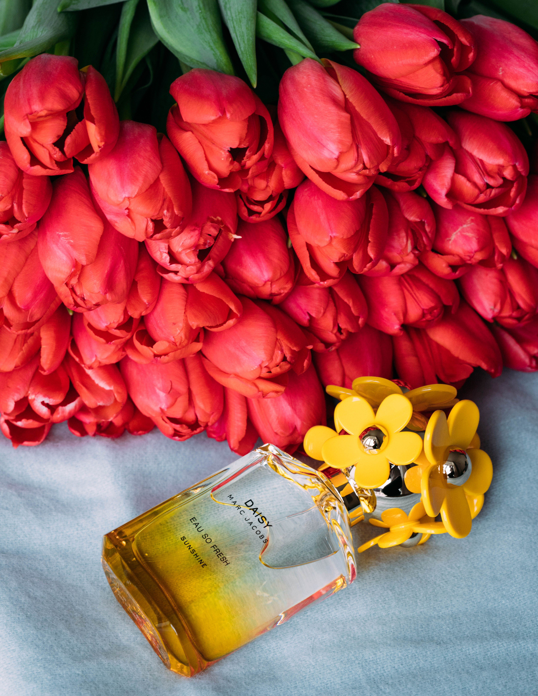
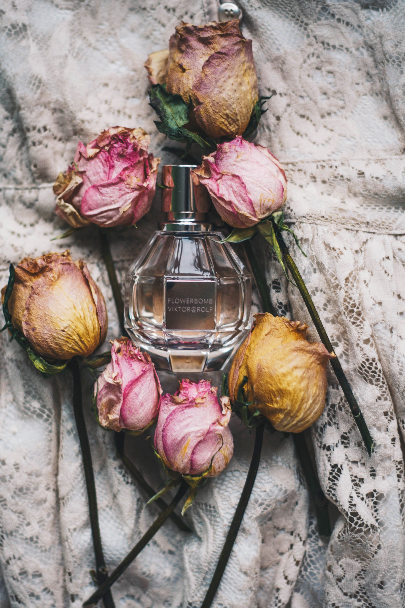

Women's Fragrance Collection

A fragrance is one of the most personal accessories you can wear. It can express your mood, complement your style, and create memories that stay with the people around you. At Everyday Fragrance, our women's collection brings together a variety of beautiful scents designed for different personalities, preferences, and occasions.
Whether you are drawn to soft floral aromas, refreshing fruity notes, comforting vanilla, or rich and sophisticated blends, there is a fragrance waiting to become part of your everyday routine. Explore our collection and find something that feels truly yours.
Floral Fragrances -Soft & Romantic

Floral fragrances are timeless favourites for anyone who enjoys delicate, graceful, and romantic scents. Inspired by blooming gardens, these fragrances often feature notes of rose, jasmine, peony, lily, and orange blossom.
A soft floral perfume is an excellent choice for daytime activities, brunch with friends, work, or a special occasion. These scents can feel light and refreshing while still leaving behind an elegant impression.
Popular fragrance notes
- Rose - classic, romantic, and elegant.
- Jasmine - rich, floral, and captivating.
- Peony - fresh, delicate, and feminine.
- Orange Blossom - bright, sweet, and uplifting.
Fruity Fragrances - Fresh & Playful

For those who enjoy energetic and cheerful scents, fruity fragrances offer a refreshing combination of sweetness and freshness. Notes such as raspberry, pear, peach, strawberry, and citrus create lively fragrances that are perfect for everyday wear.
These fragrances are particularly enjoyable during spring and summer. They complement casual outfits, outdoor activities, and relaxed occasions when you want your fragrance to feel bright and effortless.
Vanilla & Amber - Warm and Comforting
If you prefer fragrances that feel rich, inviting, and memorable, explore our warm fragrance family. Vanilla, amber, sandalwood, caramel, and musk create comforting aromas that add depth and character.
These fragrances are wonderful for cooler weather, evening outings, romantic dinners, and occasions when you want a more noticeable and sophisticated scent.
Finding the Right Fragrance for You
Choosing a perfume is about more than simply finding a scent that smells good. Think about when you plan to wear it, the fragrances you already enjoy, and how strong you prefer your perfume to be.
If you enjoy fresh and subtle aromas, consider citrus or light floral fragrances. If you prefer something deeper, explore vanilla, amber, and woody combinations. Testing a fragrance on your skin is also a helpful way to understand how it develops throughout the day.
Make Everyday Moments Memorable
Your perfect fragrance should feel natural, comfortable, and personal. Explore our collections and discover a scent that represents who you are.
Looking for another style? Explore our Unisex Collection or discover something for someone special in our Gift Packages.